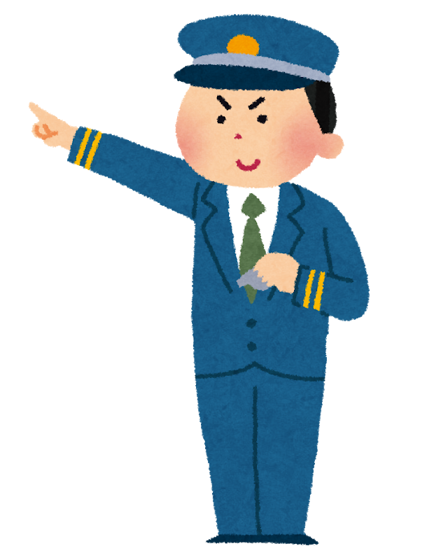
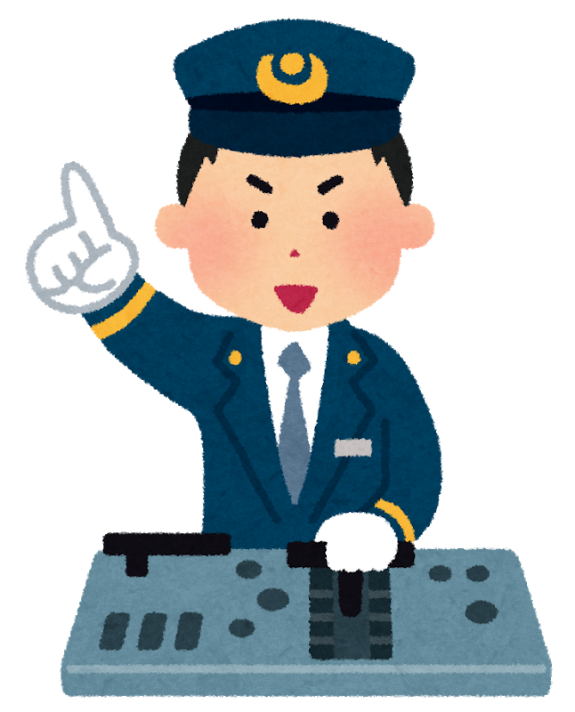
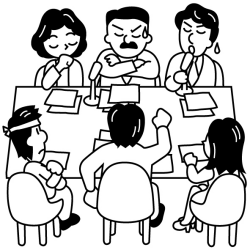

変革2027を踏まえた新たなジョブローテーションの実施について
会社提案「変革2027を踏まえた新たなジョブローテーションの実施について」の交渉経過です。
「変革2027を踏まえた新たなジョブローテーションの実施について」提案を受ける
2019年3月28日、本部は本社経営側から「変革2027を踏まえた新たなジョブローテーションの実施について」提案を受けました。
提案の趣旨及び提案内容は以下の通りです。
「提案趣旨」

今後予想される人口減少等による厳しい経営環境の中でも持続的な成長を実現していくためには、より柔軟なジョブローテーションが必要。
今までの駅、車掌、運転士の順に養成を行うライフサイクルから、今後、厳しい経営環境に変化に対応するためには、社員が多様な経験を積むことにより、安全・サービスレベルを向上していくことが求められる。

そのために、これまでの一律的なキャリアステップを見直し、新たなジョブローテーションを実施する。新たなジョブローテーションでは、社員が持つ様々な能力を余すことなく発揮でき、かつ、主体性を持って業務に挑戦できる環境を整えていくこととする。
提案内容
１、新たなジョブローテーションの実施
多様な経験を積むことで安全・サービスレベルを向上させることを目的とし、これまでの駅、車掌、運転士の順に養成を行う体系を見直し、以下の通り柔軟な運用とする。
- 車掌試験、運転士試験を廃止する。今後の乗務員への異動は任用の基準に則り扱うこととする。
- 車掌を経ずに運転士になることを可能とする。
- 車掌及び運転士の職名を「乗務係」「乗務指導係」「乗務主任」「乗務主務」に統一することとする。
- 駅配属の中途採用社員が乗務員へ異動することを可能とする。
- 同一担務の従事期間が最長でも概ね10年を超えないように異動又は担務変更することとする。
２、車掌試験、運転士試験の取扱い
- 車掌試験は2018年度（2019年3月実施済み）で廃止。
- 運転士試験は2019年度（2019年5月実施予定）をもって廃止。
- 新幹線運転士試験は2018年度（2018年10月実施済み）で廃止。
３、ライフサイクルの深度化の見直し
現在のライフサイクルの深度化は2019年度の異動をもって廃止とし、今後は、新たなジョブローテーションに組み込む。2020年4月1日時点で駅に在籍している社員については、従前の取扱いとする。
４、その他の取扱い
賃金制度の改正を行う。内容については、別途提示する。
※2019年5月14日に提案を受けました。「賃金制度の改正について」を参照してください。
５、実施期日
2020年4月1日
提案交渉での議論（要旨）
- 「異動」とは勤務箇所、「担務」とは運転士、車掌、営業、輸送である。
- 2020年4月1日時点で10年を超えている同箇所、同担務でいる運転士、車掌、駅社員が、新たなジョブローテーション対象となる。
- 運輸区の乗務係（指導係、主任係、主務係含む）については、担務で「運転士」「車掌」とういう考え方でいる。
- 乗務係（指導係、主任係、主務係含む）の一行路で「行きは運転士」「帰りは車掌」という考え方は、将来的にはあり得る。
- 今提案に関して「本体エルダーの社員」については適用外となる。
「第一次解明申し入れ」を行う

会社提案に対して、これまでのライフサイクルと違い、要員需給とは無関係に多様な経験を積むことを目的とした新たなジョブローテーションは、これまで築き上げてきた「安全や信頼を揺るがすのではないか」など、不安や疑問の声が多く寄せられています。
中央本部は、4月12日申第19号「変革2027を踏まえた新たなジョブローテーションの実施に関する申し入れ」を行いました。
◆ 主な申し入れ項目
- 車掌・運転士試験を廃止する根拠並びに適性判断は、何に基づいていて行うのか明らかにすること。
- 在来線運転士から駅(営業・輸送)になった場合の研修、見習い期間並びに研修内容を明らかにすること。
- 「同一担務の従事期間を最長でも概ね10年」とした根拠を明らかにすること。
- ジョブローテーションは年何回行うのか明らかにすること。
- 試験制度の廃止に伴い、設備、検修、製作所、事務等の社員が運転士(新幹 線運転士)、車掌(新幹線車掌)、駅への異動を希望している場合の登用について明らかにすること。
- 新幹線統括本部に所属する社員は、新幹線統括本部内でのジョブローテーションはあるのか明らかにすること。
「第一次申し入れ」団体交渉を行う。
2019年5月10日、本部は申第19号「変革2027を踏まえた新たなジョブローテーションの実施に関する申し入れ」について団体交渉を行いました。
団体交渉を通じて多くの内容が明らかに！
（要旨）
- 車掌試験・運転士試験を廃止するが「一人ひとりの社員がさまざまなことに挑戦し、主体性をもって将来の夢や希望につながる業務を経験することで成長していく観点」と「安全・安定輸送の確保とお客さまサービスに必要な社員の配置という観点」を考慮し、車掌・運転士になる社員を決定する考えである。
- 「今後のキャリアについて意見交換をする面談」は、支社担当者が行うことを想定している。
- 車掌・運転士の職名を廃止し乗務係とするが、各系統が一体となって変革を進めていくことを目的に営業、施設、電気、車両などの各系統の職名に合せることとした。乗務員としては、これまでの「車掌」「運転士」という役割から両者が協力し、より一層結び付きを強くすることで、お客さまからの信頼の一番の基礎となる「安全・安定輸送」「サービス品質」のさらなるレベルアップをめざしていく。
- 業務委託駅と駅の旅行業部門（VTS）への出向はあると考えている。
- 50歳代のいわゆる国鉄採用社員もジョブローテーションの対象である。
- エルダー社員（本体）を対象外とした理由は「雇用形態として契約期間が5年であるため、ジョブローテーションの趣旨に馴染まない」と考えている。
- 新幹線統括本部内での異動や担務変更はあると考えている。
- 「ライフサイクルの深度化」で駅での勤務を経験し、乗務員区所に復帰した社員も復帰後、同一担務での従事期間が最長でも概ね10年を超えないように異動や担務変更を行う考えである。
皆さんは会社施策に納得していますか？
各職場では提案に対する社員説明が進められていますが、質問しても不明瞭な回答が多いなど、未だ多くの疑問の声や不安を払しょくでき
ていないとする声が寄せられています。
本部・本社間の団体交渉でも経営側が策定し提案した施策にもかかわらず「詳細は決まり次第伝える」など、未だ明確になっていない回答も多くありました。
今後も、経営側の考えを明らかにさせるために取り組みます
東日本ユニオンは引き続き、第二次解明申し入れ（申第20号・40項目）の団体交渉の開催を求めていきます。また、経営側との議論で、持ち帰り検討する内容もあったことから、今後も経営側の考えを明らかにする取り組みを進めていきます。
具体的な申し入れ項目と会社書面回答は以下の通りです。
「申し入れ項目」と会社「書面回答」
【新たなジョブローテーションにおける人事運用について】
- １．入社時の配属を駅2年とする根拠を明らかにすること。
- 【回答】新入社員がお客さまサービス、社会人としての意識、収益を得ることの重要性、鉄道に必要な知識、チームワークの重要性を体得するにあたり駅業務は非常に重要な経験であると考えているため、これまでどおり駅に2年配属することとした。
経営側鉄道に必要な知識やチームワークの重要性を体得するにあたり、駅業務は重要な経験であると考えこれまでどおり2年とする。
組合側駅と車両系の採用の区分けはどうやるのか。
経営側車両・技術系は、2020年度採用以降「エリア職事務」が駅営業系で「エリア職技術」になる。
組合側技術系の社員は乗務員になれないのか。
経営側自己申告書の面談で希望を聞き、任用の基準で総合的に判断する。
- ２．車掌を経ずに運転士になることを可能とした根拠を明らかにすること。
- 【回答】運転士として必要な教育・訓練を運転士研修や区所において実施していく考えである。
経営側運転士として必要な教育・訓練を新白河の研修センターで行うと共に各区所において実施していく。
組合側今まで車掌を経験させ運転士へとしてきたが、なぜそのような運用にしていたのか。
経営側駅を2年、車掌２年の経験で、お客さま対応や乗務員の役割を理解させたうえで運転士としてきた。
組合側駅から車掌を経験せずに運転士では、異常時の対応など基本のことだけでは足りるのか。
経営側新白河の研修センターで列車防護、運転法規など習得し、これまでのライフサイクルの実績を保ったうえで、あとは現場で補完を行う。
組合側運転士・車掌の業務量についてはどう変化するのか。また、現段階での途中経過はどうなっているのか。
経営側中長編成のワンマン拡大やドライバレスにより業務量は変化する。将来のための制度改正であり、乗務員の養成には時間がかかるので、早い段階から制度を改正し、運用を柔軟にして準備をするために提案をしている。設備や車両、安全面が整ったうえで、働き方を変えていく。
- ３．車掌・運転士の職名を廃止し、乗務係とする根拠を明らかにすること。
- 【回答】各系統が一体となって変革を進めていくことを目的に営業、施設、電気、車両などの各系統の職名に合わせることとした。乗務員としては、これまでの「車掌」「運転士」とういう役割から両者が協力し、より一層結び付きを強くすることで、お客さまからの信頼の一番の基礎となる「安全・安定輸送」「サービス品質」のさらなるレベルアップを目指していく。
経営側今までは一概には言えないが、系統毎に壁があり職種毎に「運転士」「車掌」と職名を変えていたが、職名を同じ乗務係とすることで一体感を高める。
- ４．車掌・運転士試験を廃止する根拠並びに適正判断は何に基づいて行うのか明らかにすること。
-
【回答】新たなジョブローテーションは、社員の能力、挑戦意欲に応じた多様な業務経験を積むことで安全・サービスレベルを向上させることを目的としたものである。よって、これまでの駅・車掌・運転士の順に養成を行う体系を見直すものであり、車掌試験・運転士試験を廃止することとした。なお、一人ひとりの社員が様々なことに挑戦し、主体性を持って将来の夢や希望につながる業務を経験することで成長していく観点と、安全・安定輸送の確保とお客さまサービスに必要な社員の配置という観点を考慮し、車掌・運転士になる社員を決定する考えである。
経営側社員の能力、挑戦意欲に応じた多様な業務経験を積むことで安全・サービスレベルを向上させることを目的とした。これまでの駅・車掌・運転士の順に養成を行う体系を見直すものであり、車掌試験・運転士試験を廃止することとした。なお、一人ひとりの社員が様々なことに挑戦し、主体性をもって将来の夢や希望につながる業務を経験することで成長していく観点と、安全・安定輸送の確保とお客さまサービスに必要な社員の配置という観点を考慮し、車掌・運転士になる社員を決定する考えである。
- ５．新幹線運転士試験を廃止する根拠並びに適正判断は何に基づいて行うのか明らかにすること。
- 【回答】全支社社員に多様な機会を提供するため、エリアを選択できる公募制異動により募集を行うこととした。新幹線の運転士になる社員は業務への意欲、適性等を面接等で把握する考えである。
経営側全支社社員に多様な機会を提供するため、エリアを選択できる公募制により募集を行うこととした。新幹線の運転士になる社員は業務への意欲、適正等を面接等で把握する。
組合側任用の基準についてはどう判断するのか。
経営側
様々なことに挑戦と安全・安定輸送の確保とお客さまサービスに必要な社員の配置と主体性を持って将来の夢や希望につながる業務を経験することで、成長していく二つを軸に考えていく。
組合側
一律で試験があったが、なぜ無くなったのか。
経営側
向き不向きの要素はあるが、本人希望を考慮に加えて箇所長、助役の判断とした。また要員の需給もある。
組合側
駅に残りたくても車掌に行く可能性もあるのか。
経営側
ありえる。
組合側
乗務員は、将来の目標のための通過点となり、腰掛的になる社員が出てくるのではないか。
経営側
5～10年後の先のステップなど、ロングスパンで将来の計画を見ていくので、腰掛にはならない。
組合側
今後も新幹線運転士の公募はやっていくのか。
経営側
やっていく。手をあげた社員に対し、面接さらに「意欲」のある人や「適性」を見る。
組合側
新幹線運転士の公募と在来線運転士希望の自己申告の面談の違いや募集の時期については。
経営側
在来線については公募による募集ではない。新幹線の公募については、これまで試験と同じ考えであり、募集の時期に手をあげてもらう。公募の選考方法や面接など含め、駅から新幹線運転士も検討している。
- ６．駅から車掌になった場合の研修、見習い期間並びに研修内容を明らかにすること。
- ７．駅から新幹線車掌になった場合の研修、見習い期間並びに研修内容を明らかにすること。
- ８．駅から運転士になった場合の研修、見習い期間並びに研修内容を明らかにすること。
- ９．駅から新幹線運転士になった場合の研修、見習い期間並びに研修内容を明らかにすること。
- 10．在来線運転士から在来線車掌になった場合の研修、見習い期間並びに研修内容を明らかにすること。
- 11．在来線運転士から新幹線車掌になった場合の研修、見習い期間並びに研修内容を明らかにすること。
- 12．在来線運転士から新幹線運転士になった場合の研修、見習い期間並びに研修内容を明らかにすること。
- 13．新幹線運転士から在来線車掌になった場合の研修、見習い期間並びに研修内容を明らかにすること。
- 14．新幹線運転士から在来運転士になった場合の研修、見習い期間並びに研修内容を明らかにすること。
- 15．在来運転士から駅（営業・輸送）になった場合の研修、見習い期間並びに研修内容を明らかにすること。
- 16．新幹線運転士から駅（営業・輸送）になった場合の研修、見習い期間並びに研修内容を明らかにすること。
- 17．在来線車掌から在来線運転士になった場合の研修、見習い期間並びに研修内容を明らかにすること。
- 18．在来線車掌から新幹線車掌になった場合の研修、見習い期間並びに研修内容を明らかにすること。
- 19．在来線車掌から新幹線運転士になった場合の研修、見習い期間並びに研修内容を明らかにすること。
- 20．新幹線車掌から在来線車掌になった場合の研修、見習い期間並びに研修内容を明らかにすること。
- 21．在来線車掌から駅（営業・輸送）になった場合の研修、見習い期間並びに研修内容を明らかにすること。
- 22．新幹線車掌から駅（営業・輸送）になった場合の研修、見習い期間並びに研修内容を明らかにすること。
- 【回答6〜22】必要な教育、訓練はこれまでどおり実施していく考えである。
経営側
必要な教育、訓練はこれまでどおり実施していく考えである。
組合側
これまでには無い担務変更が発生するが、具体的な研修や教育についてはどうするのか。
経営側
運転士や車掌は新規の際と同じである。ＥＣからＤＣへの転換や新幹線運転士についても同じである。
組合側
駅から新幹線運転士など、在来線の乗務員経験も無い中で、習熟期間が同じとは、ならないのではないか。
経営側
研修後、各区所においてしっかり習熟できるようにする。
組合側
例えば駅から新幹線車掌。また、在来線車掌から新幹線車掌になる場合の研修についてはどうなるのか。
経営側
研修期間は違ってくる。明確に研修期間はわける。車掌の基礎知識においては在来も新幹線も同じであり、今後、新幹線に特化するものについては検討するが、各区所で教育していく。
- 23．運転士基準及び車掌基準の運転適性検査は駅等の担務変更においても更新継続するのか明らかにすること。
- 【回答】必要により適性検査を更新維持する考えである。
経営側
必要により運転適性検査の更新維持する考えである。運用により、全員維持するか、割合については人によって変わってくる。（2019年4月1日より、運転士が適正Ａ、それ以外がＢ）
組合側
医学適正検査については。
経営側
当業種にあった適性や身体的な面もあるので、厳格にその都度システムも用いながら管理していく。
- 24．「同一担務の従事期間を最長でも概ね10年」とした根拠を明らかにすること。
- 【回答】安全・サービスレベルを向上させることを目的として、概ね10年という一定の目安を設けることにより多様な経験を積むこととしたものである。
経営側
安全・サービスレベルを向上させることを目的として、概ね10年という一定の
目安を設けることにより多様な経験を積むこととしたものである。
組合側
同区で数十年いると多様な経験は積めないのか。
経営側
さらに多様な経験を他職種、他区所において積んでもらいたい。例：Ａ区運転士→Ｂ駅5年→Ａ区指導担当など相互に経験して、輸送総合スタッフとしてレベルアップしてもらいたい。
- 25．「同一担務の従事期間を最長でも概ね10年」の「概ね」とは10年を超えることもあるのか明らかにすること。
- 【回答】10年を超えることもあると考えている。
組合側
系統別で10年以上同一担務になる見込みの社員数はわかるか。
経営側
2020年4月1日からのスタートで、一斉に変えるとはならない。
一人ひとり把握はしていない。要員の件もあり、10年3ヵ月や6ヵ月はあるが、13年とかにはならないようにしていきたい。10年は一つの目安とし、がちがちな運用は考えておらず、不安の無いように管理者を通じて面談等行っていく。個別のケースで、途中乗務できなくなった期間があった場合は、10年以上同担務の場合もある。
組合側
同勤務地を11年目まで希望できるのか。
経営側
担務変更又は、次の職場にいくようになる。国鉄採用者も対象である。
- 26．「同一担務の従事期間を最長でも概ね10年」とは最短で何年か明らかにすること。
- 【回答】最低従事期間を定める考えはない。
経営側
4月1日だけの異動とはならず、一年を通して異動を図る。最低何年という決めはない。
組合側
乗務員は通年養成していくのか。
経営側
養成の回数は増える。
組合側
スケジュール感は。
経営側
新規の養成を踏まえたうえで異動計画を行う。満遍なく年に数回要請したほうが、現場の負担や要員のバランスもとれる。養成の時期は決まっていないがその都度行う。支社毎の特徴やバランスを見ながらジョブローテーションを行う。
- 27．「同一担務の…」の担務を職種別に全て明らかにすること。
- 【回答】箇所により業務量、業務内容、作業ダイヤ等が異なるため全ての担務を示すことはできない。
- 28．「同一担務」での異動もローテーションとみなすのか明らかにすること。
- 【回答】在勤地が変わった場合や業務内容に変更があった場合は、異動として取り扱う考えである。
組合側
同一担務の見なす職種は。
経営側
運輸関係では、運転士、車掌、指導、計画、交番、当務主務へは担務変更となる。
指導と交番担当を兼ねている職場については同担務とみなす。
ＥＣ→ＤＣなどの転換は担務変更とはならない。
想定はしていないが、同一線区を担当する区所（基地再編含む）への異動は、同一担務とみなす。
営業では、サービスマネージャー、出札、改札、輸送などになる。
大駅の出札専門から改札へは担務変更となるが、中小駅などの兼掌窓口の箇所など、個別のケースは示せない。職場により変わってくるので、一律には言えない。
-
29．「同一担務の従事期間を最長でも概ね10年」とあるが、甲種内燃車運転免許、甲種蒸気機関車運転免許の取得者数等による事情で例外的措置をとることはあるのか明らかにすること
- 【回答】例外的措置を取る考えはない。
経営側
次の担当が育成されていないままでの異動は出来ない。過渡期の際など、無理に10年で異動とはならない。
組合側
レール輸送のＤＬの投入が遅れているが、養成の際はどうなるのか。
経営側
同一線区での養成より、ロスは発生するが他区所に異動してからの転換を想定している。また、四季島の乗務員も年一回養成しているが、四季島の運転士になってもジョブローテーションの対象である。
- 30．①～③の担務変更もジョブローテーションと見なすのか明らかにすること。
- ①運転士⇄指導担当、運転士⇄交番担当、指導担当⇄交番担当。
- ②車掌⇄指導担当、車掌⇄交番担当、指導担当⇄交番担当。
- ③輸送⇄出札、輸送⇄改札、輸送⇄業務、輸送⇄内勤、輸送⇄サービスマネージャー、出札⇄改札、出札⇄業務、出札⇄内勤、出札⇄サービスマネージャー、改札⇄業務、改札⇄内勤、改札⇄サービスマネージャー、業務⇄サービスマネージャー、内勤⇄サービスマネージャー。
- 【回答】箇所により業務量、業務内容、作業ダイヤ等が異なるため、一律に示すことはできない。
経営側
細かい中で例外はあるが、基本ほぼ上記のとおりである。
他にホーム輸送担当と信号担当が別の担務になっている駅であれば、相互の異動は担務変更となる。
基本的に輸送担当と信号は別とみなす。
また、運転区所の指導から当務主務等へも担務変更となる。
- 31．実施時期を2020年4月1日としている理由を明らかにすること。
- 【回答】社員の旺盛な挑戦意欲に可能な限り早く応えること、制度の社員への浸透、運用開始にあたっての準備期間等を勘案し、令和2年4月1日から運用を開始することとした。
組合側
スピード感を持つということと、急ぐでは違う。
経営側
要員需給の問題もあるので、2020年4月1日が全てではない。ゆっくりやっていく考えである。
- 32．2020年4月1日時点で従事している担務が10年を超えている社員も対象としている理由を明らかにすること。
- 【回答】新たなジョブローテーションでは、社員の能力、挑戦意欲に応じた多様な業務経験を積むことで安全・サービスレベルを向上させることを目的としているため、令和2年4月1日時点で10年を超えている社員についても対象とする考えである。
組合側
中長編成のワンマン化や、ドライバレス運転の先は見えていないが、どのように考えているのか。
経営側
今のうちから育成やキャリアアップし、導入後ではなく、さらに多様な経験を積んでもらいたい。企画部門へもジョブローテーションで異動できる。異動の選択肢を広げていきたい。
- 33．2020年4月1日時点で運転士、車掌、駅で従事している担務について10年を超えている対象社員数を支社毎に明らかにすること。
- 【回答】対象社員数を示す考えはない。
- 34．2020年4月1日時点で従事している担務について10年を超えている全ての社員のジョブローテーション1回目が完了する期日を明らかにすること。
- 35．ジョブローテーションは毎年度行うのか明らかにすること。
- 36．ジョブローテーションは年何回行うのか明らかにすること。
- 【回答34〜36】社員一人ひとりの人事運用は異なるため、具体的に示すことはできない。
経営側
機械的にやっていくことではなく、希望を聞きながら進めていく。個人的なこともあり、具体的にはならない。
組合側
概ね10年という数字は個人的にかかってくる。公平・公正でなければならない。差異があってはならなし、挑戦意欲の補償を示してほしい。
経営側
人事運用になるので、明確にしておらず、柔軟に行っていく。要員需給と異動のタイミングもあり現段階では示せない。順次異動は行い、いつまでとは示せない。
組合側
年齢の高い社員から担務変更、異動を行うのか。次の担務を希望していても退職してしまう社員も出てきてしまうのでないか。
経営側
異動時期は明確には示せない。急いで異動を行うより、多様な経験を積んでもらうことを優先していく。
- 37．設備、検修、製作所、事務等をジョブローテーションの対象外とした理由を明らかにすること。
- 【回答】設備、検修、事務等については、駅、乗務員と業務の性質が異なることから対象外とした。
-
38．試験制度の廃止に伴い設備、検修、製作所、事務等の社員が運転士（新幹線運転士）、車掌（新幹線車掌）、駅への異動を希望している場合の登用について明らかにすること。
- 【回答】一人ひとりの社員が様々なことに挑戦し、主体性をもって将来の夢や希望につながる業務を経験することで成長していく観点と、安全・安定輸送の確保とお客さまサービスに必要な社員の配置という観点を考慮していく考えである。
組合側
設備、検修、製作所は性質が異なりジョブローテーションの対象外ということであるが、駅や車掌、運転士は同じ性質ということか。
経営側
駅―車掌―運転士は、業務上一体の繋がりがあるが、技術系は別である。
組合側
試験制度は廃止となり、設備、検修、製作所、事務等の社員が、新幹線の車掌、運転士、または駅に異動を希望している場合の登用についてはどうなるのか。
経営側
上記の職種から車掌、運転士へは、ジョブローテーションではなく、通常の人事異動となり、自己申告書による面談で、希望してもらうようになる。基本的には、車両、技術職等でステップアップしてもらいたいと考えており、限りなくゼロに近い事例であると考えている。
組合側
検修職や事務職等から、公募制で新幹線運転士へ挑戦できるのか。
経営側
今回（2020年6月）の公募は、在来線運転士からと対象を決めているが、今後は対象も検討し、募集の要件については今後決定していく。
- 39．業務委託駅への出向はあるのか明らかにすること。
- 【回答】業務委託駅への出向はあると考えている。
組合側
業務委託駅での教育はできるのか。
経営側
業務委託会社内での教育施設等で行っていく。
- 40．ジョブローテーションに車両係の業務も含まれるのか明らかにすること。
- 【回答】車両職の社員は対象外とした。
- 41．地区センターへの担務変更も含まれるのか明らかにすること。
- 【回答】在勤地が変わった場合や業務内容に変更があった場合は、異動として取り扱う考えである。
-
42．2019年度の新幹線運転士の養成について6月上旬（予定）に公募制異動により追加で募集する根拠を明らかにすること。また、公募制による登用の判断基準を明らかにすること。
- 【回答】新幹線の運転士を希望する社員の挑戦意欲に応えるため公募制異動により追加で募集を行うこととした。新幹線の運転士になる社員は、新幹線の運転士に対する意欲、適性等を面接等で把握する考えである。
組合側
ジョブローテーションの施策実施前に公募した理由はなぜか。
経営側
他支社から仙台支社や新潟支社等への公募制異動（エリア）を含めたためである。次期公募の詳細については後程提示となる。
- 43．新幹線車掌の公募制異動の考え方はあるのか明らかにすること。
- 【回答】新幹線車掌についても公募制異動を行う予定である。
- 44．2019年度に車掌試験を実施しない理由を明らかにすること。
- 【回答】車掌試験は養成の前年度に実施していたため、2018年度で車掌試験を終了することとした。
経営側
また、2020年度に研修に入る社員から、ジョブローテーションでの募集としたいため、選考方法を変更した。
- 45．駅配属の中途採用社員も新たなジョブローテーションの対象とした理由を明らかにすること。
- 【回答】駅から運転士までの一律的なキャリアステップを見直し、挑戦しやすい柔軟なジョブローテーションとなるため、今後は、新卒、中途採用を問わず多様なキャリアの中で駅業務や乗務員の業務を担っていくこととなる。
経営側
要員需給もあり、今までの経験を活かすことは支社への異動等であったが、乗務員希望の声もあったことから、さらに様々な可能性を広げていくためであり対象とした。
-
46．「入社2年目から3年目かけて今後のキャリアについて意見交換をする面談」とあるが、それ以外の社員のキャリアについて意見交換をする面談を行わない理由を明らかにすること。
- 【回答】入社2年目から3年目にかけて、各自の将来希望を実現するために必要な業務経験などについて意見交換を行うことを予定している。入社3年目以降も、自己申告書の面談などを通じて、社員のキャリアも含め様々な意見交換を行うことを想定している。
組合側
入社2年目から3年目の社員以外の面談は、自己申告書によるものしかないのか。また、なぜ現場での面談しか行わないのか。
経営側
入社2年目から3年目の社員については、駅職場か、乗務員職か選択をする分かれ道であるため、丁寧に今後のキャリアについて支社の担当者が行うことを想定して、面談を行うようにした。面談の時期については、今までの車掌試験の時期に行う。3年目以降の社員については、自己申告書による面談で、区所でのみとなる。
- 47．「今後のキャリアについて意見交換をする面談」は誰が行うのか明らかにすること。
- 【回答】支社担当者が行うことを想定している。
- 48．新幹線統括本部に所属する社員は新幹線統括本部内でのジョブローテーションはあるのか明らかにすること。
- 【回答】新幹線統括本部内での異動や担務変更はあると考えている。
経営側
新潟新幹線運輸区から仙台新幹線運輸区への異動や、本社（統括本部）や総合指令所もありえる。
組合側
上野第二運転所は東北線新幹線を担当しているが、例えば仙台運輸区に異動になった場合、東北新幹線で同一線区を担当することになるが、同一線区でありジョブローテ―ションになるのか。
経営側
エリアが違い、同一線区以外の担当線区もあるためジョブローテーションとなる。
- 49．エルダー社員（本体）を新たなジョブローテーションの対象外にした理由を明らかにすること。
- 【回答】エルダー社員は、契約期間が5年であるため、ジョブローテーションの趣旨に馴染まないと考えている。
- 50．休職している期間は「最長でも概ね10年」の在籍年数として加算するのか。加算しない場合、休職の種類や休職期間の算出基準を明らかにすること。
- 【回答】基本的に休職後の復帰先は元箇所となるため、休職期間については通算するものと考えている。なお、休職期間が長期にわたる場合など、個別の事情を踏まえ検討することとなる。
- 51．運輸区の基地再編で異動した場合は、前職場と同一の担務の場合、同一担務従事期間としてみなすのか明らかにすること。
- 【回答】基地再編により在勤地が大きく変わった場合や業務内容に変更があった場合は、異動として取り扱う考えである。
- 52．係職から指導職、指導職から主任職、主任職から主務職への昇進は、同一担務と見なすのか明らかにすること。
- 【回答】在勤地が変わった場合や業務内容の変更が伴わない限り、昇職した場合でも同一担務として取り扱う考えである。
- 53．試験制度の廃止に伴い、社員個々の運転適性、医学適性の他に何を基準とするのか明らかにすること。
- 【回答】一人ひとりの社員が様々なことに挑戦し、主体性をもって将来の夢や希望につながる業務を経験することで成長していく観点と、安全・安定輸送の確保とお客さまサービスに必要な社員の配置という観点を考慮していく考えである。なお、異動については、任用の基準に則り取り扱うこととなる。
- 54．ポテンシャル採用のライフサイクルについて明らかにすること。
- 【回答】多種多様な人事運用を行なっている。
- 55．企画部門から駅、運転士、車掌への担務変更もあるのか明らかにすること。
- 【回答】企画部門から駅、運転士、車掌への異動はあると考えている。
- 56．駅の旅行業部門もジョブローテーションの担務に含まれるのか明らかにすること。
- 【回答】駅の旅行部門も担務に含む考えである。
【ライフサイクルの深度化について】
- １．「運輸のプロ」をめざし実施してきた成果と課題を明らかにすること。
- 【回答】乗務員と駅の業務を双方理解したうえで業務にあたることができるため、駅輸送業務等に貢献してきたと考えている。
- ２．対象を40歳までとしていた理由について明らかにすること。
- 【回答】一定期間運転士の業務に従事した後、順次異動することとしたが、異動後の現場で力を発揮することや、キャリアステップ等を勘案し、一定の目安として40歳とした。
- ３．2019年度の異動をもって廃止する理由を明らかにすること。
- 【回答】ジョブローテーションの実施が令和2年度からであり、ライフサイクルの深度化をジョブローテーションに組み込むことから、令和元年度の異動をもって廃止することとした。
組合側
ライフサイクルの深度化とジョブローテーションの変更では「元職場に戻り活躍すること」や「希望かそうではない」かの違いがあるが。
経営側
2020年度からの人事運用を考え、さらに幅を広げた運用とした。ライフサイクルの深度化は、ジョブローテーションの変更内容に一部該当するところがあり、繋がっている面がある。要員の面もあるが、制度の移り変わりの面から判断をした。
- ４．ライフサイクルの深度化において駅経験者が再度、駅に担務変更になることはあるのか明らにすること。
- 【回答】ライフサイクルの深度化で一旦、駅での勤務を経験し、乗務員区所に復帰した社員についても復帰後、同一担務の従事期間が最長でも概ね10年を超えないように異動や担務変更を行う考えである。
経営側
再度駅への異動もありえる。駅から運転士に帰ってきた人は、担務の期間はリセットされる。
以 上
「第二次解明申し入れ」を行う
今、各職場で「変革2027を踏まえた新たなジョブローテーションの実施」に関する会社説明が進められていますが、不明確な点が多くあるなど、社員の不安や疑問が解消されるには至っていません。
中央本部は4月25日、全40項目からなる申第20号「変革2027に踏まえた新たなジョブローテーションの実施に関する第二次申し入れ」を経営側に提出しました。先に提出した申第19号（第一次解明申し入れ）の60項目とあわせると、計100項目となります。
職場議論と平行して、本提案の全容を明らかにしていきます！
「東日本ユニオンNEWS」No.82を参照してください。
第二次解明要求の団体交渉を行う
中央本部は2019年6月6日、申第20号「変革2027を踏まえた新たなジョブローテーションの実施に関する第二次解明申し入れ」の団体交渉を開催し、提出していた全40項目の解明要求に対する経営側の考えを一つひとつ明らかにさせてきました。
第一次、第二次の解明交渉を通じて、計100項目にわたり経営側の考えを明らかにさせてきました。しかし「変革2027」で描く「新たな輸送サービス」は、その見通しも含めて何ら具体的になっていません。解明してきた内容をベースとしつつ、引き続き、組合員と社員の意見を要求へと高めていく取り組みを職場から進めていきます。ぜひ、私たち東日本ユニオンに加入して、一緒に取り組みましょう！
申し入れ項目と会社書面回答は以下のとおりです。
申し入れ事項と書面回答
- １．会社提案の内容に変更や追加事項等が生じたにも関わらず、その内容を労働組合に説明を行わない理由を明かにすること。
- 【回答】提案内容に変更は発生していない。
組合側
提案時には新幹線車掌の公募制はなかったはずだが。
経営側
「新たなジョブローテションの実施」は2020年4月1日以降であり、公募制は通常の転勤であり、社員の要望に応えて実施する。
組合側
「新幹線の運転士試験は2018年度で終了し、今後、公募制による」と提案されたが、これはジョブローテションとは関係がないのか。
経営側
公募制異動は提案事項ではないが、スケジュールが分かっていたので提案時に説明した。誤解を与えて申し訳ない。
組合側
施策の一環として認識する内容であった。提案や説明もない。そもそも「試験が廃止になることによる公募制ではない」ということか。
経営側
ジョブローテーションとは関係ない。公募制については混乱を与えないよう今後の対応は会社内で議論していく。
【総合運輸区について】
- １．同総合運輸区内で、在来線運転士→新幹線運転士、新幹線運転士→在来線運転士へと変わった場合は担務の変更と判断するのか明らかにすること。
- 【回答】新幹線運転士については公募制による運用であり、区所間異動を伴う場合が一般的であるため、総合運輸区においても、基本的に同様の取り扱いを検討しているところである。
経営側
公募制に手を挙げて在来線から新幹線運転士になり、同区所の発令になった場合は自らチャレンジしていることから担務変更とする。総合運輸区で新幹線運転士の免許取得者が在来運転士をしていて任用の基準で新幹線運転士になった場合は一般の人事異動の扱いとなり、ジョブローテーションとは認めない。
●長野支社で例えると新幹線免許があり、松本運輸区（在来線）→長野総合運輸区（在来線）はカウントするが、長野総合運輸区（在来線）→長野総合運輸区（新幹線）の変更はジョブローテーションとして認めない。
●車掌で在来線と新幹線の「込み運用交番」の職場で、在来線から新幹線の交番に入った場合もジョブローテーションとは認めない。
【公募制異動（エリア）について】
-
１．育児・介護、配属者の転勤等により公募制異動（エリア）によって、支社間異動で転勤になった社員はジョブローテーションとみなすのか。また、転勤先のエリア内において異動又は担務変更はあるのか明らかにすること。
- 【回答】異動として取り扱う考えである。また、転勤先のエリア内においても異動又は担務変更を実施する考えである。
【公募制異動について】
-
１．提案において、2019年度の新幹線運転士の養成について6月上旬（予定）に追加で公募制異動を行うと示されたが、公募制による具体的方法及び登用の判断基準を明らかにすること。
- 【回答】新幹線乗務員（車掌、運転士）の公募制異動の募集について、通達したところである。
経営側
公募制による新幹線運転士の応募に関しては、一次試験で自己PRと小論文。二次試験で適性検査と面接となり、今までと内容は変わらない。
-
２．提案時では2019年度の新幹線車掌の公募制異動について明らかにされていない中で、各現場の説明会では新幹線車掌についても公募制異動を行うと示されている。そのような判断に至った経緯及び公募制の具体的方法、登用の判断基準を明らかにすること。
- 【回答】社員の挑戦意欲に応える新たな運用方針を示したものである。
経営側
判断に至った経緯は希望者が多いことと、全支社から応募できるためである。
●公募は在来線車掌、在来線運転士が条件である。
-
３．各現場の説明会において2020年4月1日以降、運転士及び車掌（新幹線を含む）の公募制異動を実施すると示されている。そのような判断に至ったのであれば、経緯及び任用の基準との関係性を明らかにすること。
- 【回答】社員の挑戦意欲に応える新たな運用方針を示したものである。
組合側
社員説明会において在来線の運転士、車掌も「公募制になる」と説明をしている箇所がある。
経営側
間違って説明している支社、現場があり、管理者に再度周知・徹底していく。
【現行のライフサイクルとジョブローテーションの比較について】
-
１．現在、入社から駅、車掌を経験し、運転士へとキャリアステップを行なってきた実績について新たなジョブローテーションにおいても同等の価値を生み出せる根拠を明らかにすること。
- 【回答】今後、厳しい経営環境の変化に対応するためには、これまでの硬直的なライフサイクルをより柔軟なものとする必要がある。新たなジョブローテーションを実施することで社員が多様な経験を積むことにより安全・サービスレベルを向上させることが可能であると考えている。
経営側
教育の環境も変化し、シュミレーターやjoi-tabなどが整っており、教育の仕方が変わってきている。
組合側
キャリアUPの維持については。
経営側
経験値の差はあるが、新白河での研修カリキュラムなども検討していくが具体的に定まっていない。
組合側
輸送障害の対応など、駅→運転士や車掌→運転士では違ってくるのではないか。
経営側
駅職場でお客さま対応は経験しているので、できている。あとは運転法規などの法規の問題などがあるが、安全を確保できるようにカリキュラム等勉強していく。
- ２．現行のライフサイクルでは「運転士から先のキャリアを描きにくい」とする根拠を明らかにすること。
- ３．現行のライフサイクルでは「早い段階から企画部門業務等を希望する社員の期待に応えにくい」としている理由を明らかにすること。
- 【回答2〜3】現行のライフサイクルは運転士まで養成を行うことを基本としているため、運転士から先のキャリアを描いたり、入社後の早い段階から企画部門等の業務を希望している社員の期待に応えにくいと認識している。
組合側
「運転士から先が描きにくい」とはどういうことか。
経営側
今は運転士がゴールのサイクルになっていて、27歳～29歳には運転士にたどり着く。女性社員も採用枠の4割と増えており、30歳前の適齢期に結婚→出産→育児と、試験は受かっていても「研修に行ける環境にない」との声も含めて、キャリアを前倒しにして希望を叶えられるようにした。また、採用の8割が大卒となり、早期段階で企画部門を希望している社員が多いためである。
組合側
現行のライフサイクルではできないのか。
経営側
会社の敷いたレールで最終目的が運転士になっている社員が多いと認識している。このジョブローテーションで、様々な業務に挑戦できる環境が当社にはあることを伝えていきたい。
●「生涯運転士をやりたい」「車掌をやりたい」という人もいるのは事実だ。ジョブローテーションの実施で車掌、運転士がやれないと言っている訳ではない。
- ４．現行のライフサイクルでは「早い段階から企画部門業務等を希望する社員の期待に応えにくい」とあるが、企画部門等の「等」は何か明らかにすること。
- 【回答】グループ会社等への出向を想定している。
- ５．現行のライフサイクルでは「早い段階から企画部門業務等を希望する社員の期待に応えにくい」とあるが「早い段階」とは具体的に入社後何年か明らかにすること。
- 【回答】具体的な異動時期を定める考えはない。
経営側
何年目という定義はない。入社から駅を2年間経験するのが基本であり、今回の制度変更で3年目から企画部門ということもある。現行では入社から8年目で運転士、10年ほどで企画部門へという感じだが、それよりは早いイメージである。
組合側
では、入社後すぐに運転士や企画部門へ配属という考えはあるのか。
経営側
社会人、鉄道マンとしての基礎は駅職場であり、まず2年間は駅職場で経験を積んでもらう。
●試験、研修スパンや要員需給で平成初期の採用者と最近の採用者とでは、駅、車掌の経験年数に差が出でている。
【ライフサイクルの見直しに伴う試験制度について】
-
１．車掌試験の受験資格を「1等級以上の等級に在級する者のうち、勤続年数1年以上の者」から「1等級以上の等級に在籍する者のうち、勤続年数2年以上の者」（現行「勤続2年以上の者」）としてきた理由を明らかにすること。
- 【回答】駅業務従事期間が若手社員の育成上、第一の実践段階として重要な期間であるという認識に基づいている。
経営側
要員需給の関係もあり、駅経験を1年伸ばした。
-
２．運転士試験の受験資格を「2等級以上の等級に在級する者のうち、勤続年数3年以上の者」から「2等級以上の等級に在籍する者のうち、勤続年数5年以上の者」（現行「勤続5年以上の者」）としてきた理由を明らかにすること。
- 【回答】駅業務の経験を2年とし、1回目の車掌養成終了後に運転士研修を行うこととしたため、「勤続5年以上の者」としたものである。
経営側
車掌試験の条件を駅業務2年としたため、研修に入る時期などの関係で5年とした。
- ３．これまで新幹線運転士試験の受験資格を、在来線運転士（指令経験含む）5年としてきた根拠を明らかにすること。
- 【回答】新幹線運転士の養成に際して実施した新幹線運転士試験の状況を踏まえ、総合的に判断したものである。
経営側
試験制度にすることによって全支社が対象になり、応募者も多くなると想定し一定程度の線引きをした。また、経験の観点など総合的判断で5年とした。
【変革2027で目指す新たな輸送サービスと社員像について】
- １．機械化、システム化に置き換える設備を全て明らかにすること。
- ２．機械化、システム化に置き換える時期を明らかにすること。
- 【回答1〜2】今後の技術革新等の進捗により変化が生じるため、一律に示すことはできない。
経営側
実用化の試験をやりつつ導入していく。営業関係ではオンライン販売、後方業務のシステム化、券売機などの締め切り作業を毎日から一定期間の区切りとするなど。
●企画部門ではAI導入による判断業務を任せるなど。
●検修部門では、自動化や全面機械化など。
●すべて2027年で終わると考えていない。
組合側
機械化もできていない中で、新たな輸送サービスとなるのか。
経営側
導入してからではなく、今から備え育成して導入していく考えである。
組合側
例えば運転士から出札業務に担務変更しても、その業務がなくなる可能性もある。機械化などの見通しがない中で、担務変更までして担う意味はあるのか。
経営側
業務がなくなったとき「何をやらなければならないのか」を考えられる社員をつくっていく。多様な経験を積むことにより、案内係や旅行商品の案内などに力を発揮できる。
- ３．自動改札機導入を予定している駅を全て明らかにすること。
- 【回答】自動改札機導入については、お客様のご利用実態等を総合的に勘案し、決定していく。
経営側
常に導入は検討している。今は具体的になっていない。必要な箇所に大幅に導入するのではなく、個別で見て導入していく。
組合側
乗降人数により自動改札を2台→3台へなどの基準はあるのか。
経営側
明確な条件はなく、個別での判断となる。
- ４．Suicaエリアの拡大範囲、拡大時期を明らかにすること。
- 【回答】Suicaエリアの拡大については、お客様のご利用実績等を総合的に勘案し、決定していく。
経営側
投資対効果および戦略的にエリアを絞って導入する。ワンマンの拡大と連携して考えていくことでもあるが、検討段階である。
- ５．駅の定型業務とは何か明らかにすること。
- 【回答】eチケットに代表されるIT化やシステム化により縮小可能な業務を定型的な業務と位置付けている。
- ６．駅の定型業務を縮減する業務内容を明らかにすること。
- 【回答】eチケット化によりきっぷの発売をオンラインにシフトしていくこと等により、駅の定型業務を縮減していく。
経営側
駅業務で縮減できるであろう項目は、
①タッチでGO新幹線、モバイルの推進による窓口販売の廃止
②締め切り作業を毎日ではなく何日かに一度にする
③分併作業の削減
④歩行者通路等の除雪の機械化
⑤車椅子のお客さまが自ら乗降できるようにホームの段差や隙間をなくす
⑥窓口による切符の変更や払い戻し（eチケット化）。
組合側
逆になくすのが困難な業務はどういうものがあるのか。
経営側
想定外の異常時対応や輸送混乱の対応などがあげられる。対応は駅社員に限らず、グループ全体で職種を問わず総体で対応する。
- ７．2020年4月1日以降も委託駅の拡大を更に推し進めるのか明らかにすること。
- 【回答】当社を取り巻く環境の変化、エルダー社員の雇用の場の確保の必要性、および駅要員事情の急激な逼迫を踏まえ、さらなる駅業務委託を推進していく。
経営側
各支社で決める。決定したら前広に情報は伝えていく。
組合側
無人駅にするための要件はあるのか。
経営側
明確には無く、利用実績のデータを見て判断する。
●資格が必要となる運転取扱い駅や新幹線の停車する中核となる駅以外は委託することもあり得る。「コーナー委託（一部の改札口）」もあるが、駅ごと委託のほうがやりやすいと考える。
- ８．2020年4月1日以降も無人駅の拡大を更に推し進めるのか明らかにすること。
- 【回答】お客様のご利用実態や駅の業務実態等を総合的に勘案し決定していく。
組合側
無人駅化は、まずは委託駅にしてから行うのか。
経営側
必ずしもそうではない。委託→無人化ではない。様々な調整が必要になるが、無人駅の拡大の可能性は高い。
- ９．現場社員の企画業務参画の業務内容、作業ダイヤを明らかにすること。
- 【回答】既に実施している「旅の目的（コト）創り」をはじめとした「目的地を創る」「駅を楽しく、魅力的にする」といった業務等を、現場社員が行うことを検討している。
経営側
企画部門が中心となってやってきたこと（駅に関わる契約業務など）をやってもらうが、単純に支社でやっていることを駅でやるということではない。どの様な業務が時間が取れればできるのか検証していく。
組合側
企画部門の縮小はあるのか。
経営側
可能性はある。
組合側
作業ダイヤに組み込むのか。
経営側
出札や改札時間でも実態を見て「やってもいい時間」とするなど検討していく。
- 10．短編成のワンマン拡大の線区、車種を明らかにすること。
- 11．短編成のワンマン拡大の実施時期を明らかにすること。
- 12．中長編成のワンマン拡大とは何両編成か明らかにすること。
- 13．中長編成のワンマン拡大の線区、車種を明らかにすること。
- 14．中長編成のワンマン拡大の実施時期を明らかにすること。
- 15．中長編成のワンマン拡大に伴う必要な車両設備、地上設備を明らかにすること。
- 16．短編成・中長編成のワンマン拡大に伴う設備投資額を明らかにすること。
- 17．短編成・中長編成のワンマン拡大実施後の運転士・車掌の要員数を各支社の区所毎に明らかにすること。
- 【回答10〜17】ワンマン運転の拡大については、最新技術で置き換え可能な仕事の機械化・システム化を推進し、取り組んでいくものである。
経営側
短編成は1～2両、中編成は3～6両、長編成は7両以上となる。現在は仙台空港アクセスのみ4両ワンマン運転を行っている。
組合側
時期や見通しについてはどうなっているのか。
経営側
全線区で検討している。現段階では黒磯～新白河間で5両編成にドアモニターを付けて試験を行っている。良い成果が得られれば、支社ごとに要員を見ながら導入していく。
組合側
どの様な設備が必要か。
経営側
安全面を見ながら検討し、国交省に申請など様々やることはある。現時点では、停止位置の見直しやミラーなどが必要になるとみている。人件費を含めて様々検討していく。
- 18．ドライバレス運転の実施時期を明らかにすること。
- 19．ドライバレス運転に必要な車両構造並びにホーム設備を明らかにすること。
- 20．ドライバレス運転に伴う設備投資額を明らかにすること。
- 21．ドライバレス運転における安全の根拠を明らかにすること。
- 【回答18〜21】ドライバレス運転については、自動列車運転装置の試験を始めた段階であるため、現在のところ、将来的な計画等を示すことはできない。
経営側
保安要員（運転士か車掌どちらを乗務させるか）含めて様々検討中である。今は自動運転であるが、将来は無人運転もあり得る。
組合側
条件はあるのか。
経営側
現段階ではないが、国に許可を得て行う。踏切やホームドアなどの整備も必要であり、色々なケースを見ながら検討していく。
- 22．お客さまが求める「輸送サービス」の考えを明らかにすること。
- 【回答】出発地から目的地までシームレスに移動できる輸送サービスを想定している。
経営側
MARSなどがあげられる。安全・安定輸送やお客さま対応ができる社員配置を含めた輸送サービスと考えている。
- 23．「常に外部との連携を志向するオープンなマインドセット」とは、具体的にどういうことか明らかにすること。
- 【回答】主体性を持って多様な業務を経験することで、鉄道輸送全般に対する理解を深めることであり、その実現に向けてオープンな気持ちで積極的に挑戦して行く気概を持つ社員を目指しているものである。
経営側
会社外の環境、世の中の社会環境を気にして見ていくことを含めて感性を磨くということである。
組合側
ジョブローテションの変更との関係性はあるのか。
経営側
環境の変化に会社も柔軟に対応していくためであり、社員の想いも汲み取れるようにするためである。
- 24．「将来的な車掌業務の変化」を全て明らかにすること。
- 【回答】中長編成ワンマンの拡大等により車掌の業務量が減少していくことを想定している。
経営側
基本的には変わらない。後方防護要員である。今後はドア扱いや放送から、お客さま対応がメインになると考えられる。ドライバレス運転になった際は、車掌がお客さま対応として乗務する可能性もあり、環境の変化に対応していく。
- 25．各支社の2020年4月1日時点における社員配置駅を明らかにすること。
- 26．各支社の2020年4月1日時点における営業、輸送、運転士、車掌の社員数を明らかにすること。
- 【回答25〜26】社員数等を示す考えはない。
経営側
無人駅化の実施などがあれば、各地方にて提案して議論していく。
●来年4月1日時点での社員配置駅は分からない。今年度、各支社で委託駅などが検討されていく。
社員数の見立てについては運用が変わるのみであり、規模感は変わらない。標準数に見合った配置はしている。
以 上
「ジョブローテーション」について、労働組合側から提案する。
「ライフサイクル（現行）コース」と「ジョブローテーションコース」の2つのコースを!
本部は6月24日、申第31号「『変革2027を踏まえた新たなジョブローテーションの実施について』に関する申し入れ」を経営側に提出しました。この申し入れでは「ライフサイクル（現行）コース」と「ジョブローテーションコース」の2つのコースを設定し、社員一人ひとりが選択出来るようにすることを経営側に提案しています。
「究極の安全」「サービスレベルの向上」には、熟練の技術と経験が重要
当社は各系統の各担務の専門性が高く、技術の習得に長い年月を要する業種です。そして、これまではライフサイクルにおいて習得した熟練の技術と経験に裏打ちされた知識で、お客さまに「安全」と「安心」を提供してきました。
「新たな輸送サービスの価値の創造」に貢献できる社員像は、将来を見据え多様な経験を積むことと同時に、これまで築き上げた社員一人ひとりが持つ技術や技能を発揮できる人事運用が重要です。激しく変化する経営環境下においても「究極の安全」と「サービスレベル向上」を実現していくために、申し入れを行いました。
JR東日本で働く社員のみなさん！ぜひ、私たち東日本ユニオンと会社施策について語り合いましょう！
申31号「ジョブローテーションについての組合側提案」について交渉を行う
社員の希望に添い、選択制を採用するべきだ！
中央本部は7月25日、申第31号「変革2027を踏まえた新たなジョブローテーションの実施について」に関する申し入れの団体交渉に臨みました。
組合員をはじめ、現場で働く社員の意見を集約し「現行のライフサイクルコース(駅→車掌→運転 士)」と「ジョブローテーションコース」の二つのコースを設定し、社員一人ひとりによる選択制度
とすることを要求しました。
組合側の主張
- 経営環境の変化や人材確保を柱とした施策はわかるが、社員の声を集約し議論した結果、概ね10年で異動することを望んでいない社員がいるのも事実である。社員の働きがいやニーズに対応するためにも、方手落ちにならないよう2コースの選択制を申し入れた。
- 鉄道という特殊な専門的な職業であり、今までのライフサイクルのように受動的ではなく、自らが意志持ち、現地現職でその道を極めていくということも意識変革に結びついていく。意識を持って、車掌や運転士になることも必要である。
- 担当線区のプロを残すことも重要であり、2コースの選択制にしても会社の目的は達成できる。
- 30 代半ばを超えた断面で10年後の将来像が描きにくい。希望通りにいかない不透明感もあるため、選択肢を増やすべきである。
- 現職を極めて「安全のプロ」に対しての夢を持ってやっている社員への担保が必要である。
- 30~40代での目標が「現地現職」で頑張りたいという社員の夢は叶わないということか。
経営側の回答
- 組合側の提案は理解できるが、コース設定をしなくても新たなジョブローションに現行要素は含まれており、十分対応できる。
- 多様な経験を積むことも重要であり、現地現職を希望する社員にも無限な選択肢で夢を描いてもらいたい。
- 安全が第一であり、無理な異動とはならないが、様々な区所を経験し、良いところを他区で伝えてレベルアップを図っていければよい。
- 将来が描きにくい社員がいることは認識している。将来に不安を持つ社員に対して、どの様な方法、機会で描くようにできるか検討している。
- 一人ひとりの個性を活かし、最終的な目標に対して応援する。自己申告書の面談の場で、希望や将来について話合いを持っていく。
安全風土、安全文化を継承・向上させることのできる制度実現を！
現状の制度提案では、自らの夢を実現できる社員と、これまで同様に会社の指示(任用の基準)で受動的に人事運用をされる社員に二分されることになります。
私達の要求はこれまで築き上げてきた安全風土、安全文化を継承し、向上させていくことが柱です。現場社員は常にお客さま視点で働いている。それは鉄道業に必要な知識、技術を堅持できるライフサイクルコース(駅→車掌→運転士)があるからこそ実現できています。
東日本ユニオンは今交渉を踏まえ、全ての社員が不安なく働きがいの持てる制度実現をめざし、要求を確立していきます!
申し入れ項目と会社書面回答は以下の通りです。
申し入れ項目と会社書面回答
- 1.「ライフサイクルコース（現行）」と「ジョブローテーションコース」の二つのコースを設定し、社員一人ひとりによる選択制度とすること。
- 【回答】今後、厳しい経営環境の変化に対応するためには、これまでの硬直的なライフサイクルをより柔軟なものとする必要がある。社員が多様な経験を積むことにより安全・サービスレベルを向上させるために、新たなジョブローテーションを実施することとした。
以 上
変革2027を踏まえた新たなジョブローテーションの実施に関する第四次申し入れ
中央本部は、8月30日に申第4号「変革2027を踏まえた新たなジョブローテーションの実施に関する第四次申し入れ」を経営側に提出しました。
中央本部はこれまで、経営側提案の「新たなジョブローテーション」について3回にわたり団体交渉を行い、施策の目的と人事運用の概要について明らかにするべく議論を行ってきました。
そのなかで経営側の考えていることが明らかになった一方で、その後に提案された「ワンマン運転の拡大について」や「『駅』の変革と新たな顧客接点創り」等で示されているように、要員に大きく関わる施策が同時に進められていることから、目指すべき経営戦略だけが先行し、現業機関で働く現場社員は自らの将来像の不透明さは増しているのが現実です。
そこで組合員、社員の不安、不満を解消するべく第4次申し入れを提出しました。
「第四次申し入れ」団体交渉を行う
中央本部は、2019年9月4日、申第4号「変革2027を踏まえた新たなジョブローテーションの実施に関する第四次申し入れ」の団体交渉に臨みました。
不確定な経営戦略で将来像が描けない。不安な声が解消されず！
本部は、3月に提案を受けて以降、3回にわたり団体交渉を重ねてきました。経営側は「社員がさまざまなことに挑戦し、主体性をもって将来の夢や希望につながる業務を経験することで成長していく」としていますが、同時に提案されている「『駅』の変革」や「ワンマン運転の拡大」など、実施計画や要員の見通しなど経営側からは「検討中である」と不透明な部分が多く、自らの将来設計を描く上での不安要素の解消をめざし、団体交渉を行いました。
本部発行の「東日本ユニオンNEWS No.122」も御覧ください。
具体的申し入れ内容と書面回答
- １．今施策を全社一斉実施した場合、地方と首都圏との違いから想定している課題を明らかにすること。
- 【回答】一人ひとりの社員が様々なことに挑戦し、主体性をもって将来の夢や希望につながる業務を経験することで成長していく観点と、安全・安定輸送の確保とお客さまサービスに必要な社員の配置という観点を考慮していく考えである。
- ２．現行のライフサイクル制度においても、運転士の持っている車種の免許、転換による資格の有無で勤務作成が困難な状況で非効率な運用となっているが、ジョブローテーションを実施した場合にこうした課題をどのように克服するのか明らかにすること。
- 【回答】一人ひとりの社員が様々なことに挑戦し、主体性をもって将来の夢や希望につながる業務を経験することで成長していく観点と、安全・安定輸送の確保とお客さまサービスに必要な社員の配置という観点を考慮していく考えである。
- ３．10年後の駅業務（営業・輸送）で考えられる必要な要員数を明らかにすること。
- ４．10年後の車掌業務で考えられる必要な要員数を明らかにすること。
- ５．10年後の運転士業務に必要な要員数を明らかにすること。
- 【回答】業務の運営に必要な要員は確保していく考えである。また、仕事の高度化や社員の活躍フィールドの拡大、お客さまのより近くで創意を発揮できる仕組みづくりなどを通じて、社員の働きがいを創出していく考えである。
- ６．今施策を実施した場合、既に新幹線運転士免許取得をしている社員及び公募制異動によって新幹線運転士免許を取得した社員が別担務から再度、新幹線運転士を目指せる道筋を明らかにすること。
- ７．公募制以外で新幹線運転士への担務変更はあるのか明らかにすること。
- ８．公募制以外で新幹線車掌への担務変更はあるのか明らかにすること。
- 【回答】一人ひとりの社員が様々なことに挑戦し、主体性をもって将来の夢や希望につながる業務を経験することで成長していく観点と、安全・安定輸送の確保とお客さまサービスに必要な社員の配置という観点を考慮していく考えである。
- ９．新幹線（運転士・車掌）の公募制を管轄する機関を明らかにすること。
- 【回答】公募制異動の担当部署は、人財戦略部である。
- 10．当社は持ち家制度を推奨し、社宅の利用制限、賃貸住宅援助金の支給期間の制限を設けたが、ジョブローテーションを導入することにより、強制的に勤務地が移動されることで矛盾が生じることに対する考え方を明らかにすること。
- 【回答】一人ひとりの社員が様々なことに挑戦し、主体性をもって将来の夢や希望につながる業務を経験することで成長していく観点と、安全・安定輸送の確保とお客さまサービスに必要な社員の配置という観点を考慮していく考えである。
以 上
「第五次申し入れ」を行う
9月12日に申第5号「変革2027を踏まえた新たなジョブローテーションの実施」に関する第五次申し入れを経営側に提出しました。
東日本ユニオンは3月28日に経営側から提案を受けて以降、4回にわたり団体交渉を開催してきました。
110項目の解明要求に対し経営側から示された回答は「検討中」としている中身が多く、未だ60項目について明らかになっていません。
また「ワンマン運転の拡大」をはじめとして様々な会社提案がされており、実施計画や業務内容、要員体制等の多くが不確定であります。
いまだ「検討中」の回答が多い中で、10年後の将来像は描けない。施策の実施は時期尚早である！
施策実施を半年後に控え、今後の自分自身のキャリアを描くことは困難であり、自己申告書に基づいた個人面談において「どのように申告して良いか分からない」等といった不安や疑問の声が多く寄せられています。
「第五次申し入れ」団体交渉を行うNEW
中央本部は9月30日、申第5号「変革2027を踏まえた新たなジョブローテーションの実施に関する第五次申し入れ」の団体交渉を行いました。
席上、交渉団は「実施日の見直し」を強く求めましたが、対する経営側の回答は「社員の旺盛な挑戦意欲に可能な限り早く応えること、制度の社員への浸透、運用開始にあたっての準備時間等を勘案し、令和2年4月1日からの運用を開始する」としています。
私たちの主張
- 現段階において全社員が挑戦意欲を持っているわけではない。それだけ不透明、不確定な内容が多すぎる！
例えば、水戸支社の社員が公募制において新潟新幹線運輸区の新幹線運転士となり、10年後「水戸支社に帰れるのか」それとも「新潟支社管内の現業機関で勤務するのか」または「別の支社に異動となるのか」さえ想定できず、社員自らが描く将来像に保証が持てない！
- これまでのライフサイクル（駅→車掌→運転士）は、経営側が敷いてきたレールであり、経営環境が変わったからといって「人事運用を見直す」と言われても、社員にも感情や生活があり、人の気持ちは簡単には変わらない！
- JR人生、そして自らの生涯を決める「重大な決断」を焦って決めさせるわけにはいかない！
- 「不安や疑問を解消する努力は行う」と言うが、職場では「不満が渦巻いている」ことを経営側は自覚するべきだ！
申し入れ項目と会社書面回答は以下の通りです。
「申し入れ項目」と「会社書面回答」
- １．今年度に予定している自己申告書に基づいた個人面談について、実施時期とジョブローテーションに関する面談内容を明らかにすること。
- 【回答】自己申告書に基づいた個人面談については、10月以降実施する予定である。なお、今まで以上に社員の将来希望については詳細に把握していく考えである。
- ２．令和2年4月1日の実施を見直し、再度検討すること。
- 【回答】社員の旺盛な挑戦意欲に可能限り早く応えること、制度の社員への浸透、運用開始にあたっての準備期間等を勘案し、令和2年4月1日からの運用を開始することとした。
以 上
<< 前のページに戻る